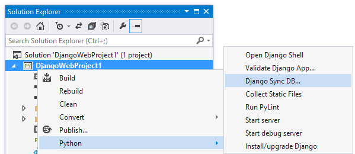

Before running this project, you need to synchronize the database .
This project has default settings for the database (it uses sqlite). You'll need to create the database before running the project.
Right-click the project node and select Python->Django Sync DB.
